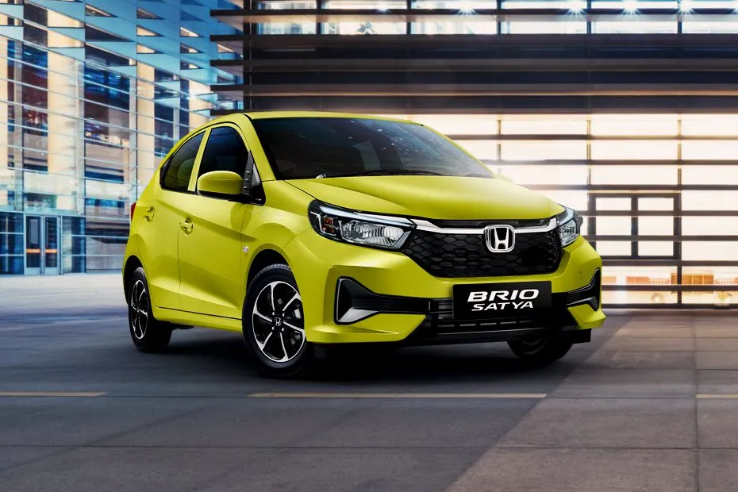

Avanza
Mobil Toyota Avanza adalah salah satu mobil laris di Indonesia karena cocok untuk berbagai keperluan, seperti perjalanan keluarga maupun bisnis. Tidak hanya dari sisi penjualan, Toyota Avanza juga menjadi salah satu mobil favorit dalam hl persewaan mobil. Selain irit bahan bakar, Toyota Avanza turut memiliki kapasitas penumpang yang besar. Mobil ini cocok untuk bepergian dengan barang bawaan banyak karena tersedia bagasi belakang yang juga dapat diubah menjadi tempat duduk penumpang.
Brio
Rental mobil Honda Brio yang terkenal dengan julukan “fun to drive” untuk bepergian anda bersama keluarga dan teman-teman. Sejak kemunculannya pada tahun 2012 di Indonesia, Honda Brio disambut dengan baik dan menjadi city car favorit di Indonesia. Terdapat dua tipe Honda Brio yang diluncurkan pada tahun 2013 yaitu tipe 1.2L Automatic dan Satya. Pada tahun 2018, generasi kedua Honda Brio diperkenalkan. Dibandrol dengan harga sekitar 149 jutaan, membuat Honda Brio digolongkan menjadi kendaraan yang murah dan termasuk menjadi LCGC (Low Cost Green Car). Harga ekonomis dan ramah lingkungan, hal ini yang membuat Honda Brio mempertahankan eksistensinya dari awal diluncurkan. Honda Brio juga terkenal untuk para pemudi pemula. Maintenance dari LCGC biasanya juga lebih mudah. Brio yang berasal dari Bahasa Italia yang berarti “lincah” ini memang cocok menjadi nama mobil yang memang digemari kawula muda ini.
Alphard
Bagi Anda yang sering melakukan perjalanan bisnis atau bepergian dengan grup, rental mobil Toyota Alphard dapat menjadi salah satu solusi mobilitas Anda. Selain nyaman, sewa mobil Toyota Alphard juga dapat menghemat biaya. Bagi yang bepergian untuk tujuan bisnis, menyewa mobil Toyota Alphard bisa memudahkan Anda berkoordinasi dengan tim selama perjalanan.
Untuk menyewa mobil hubungi : +6281231231231